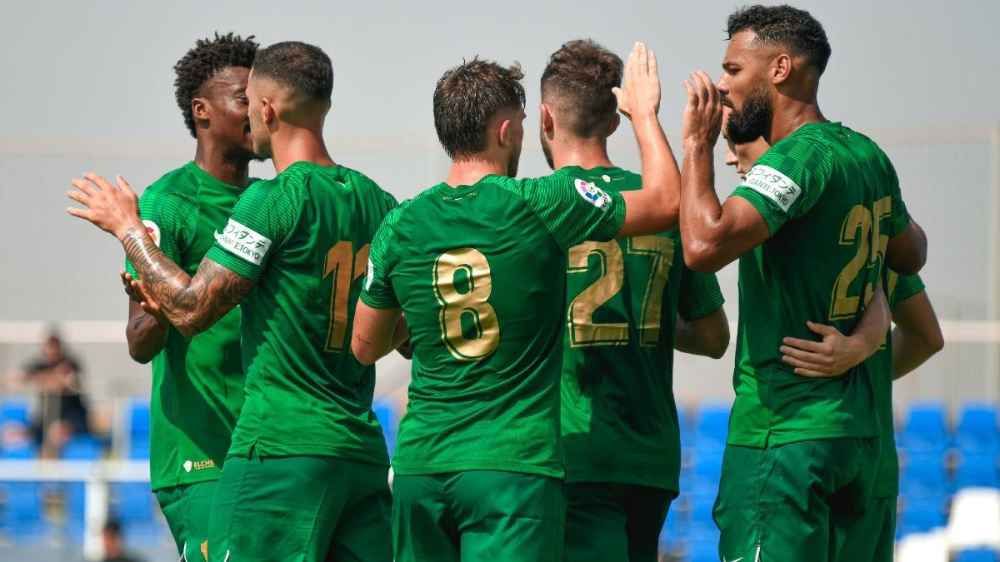
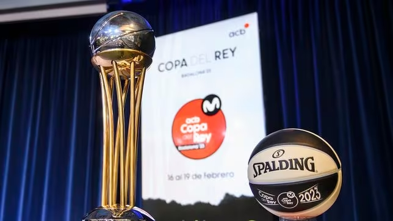
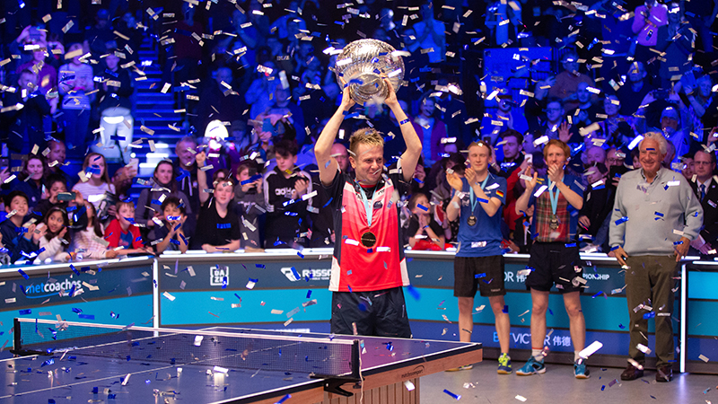

SD Sibarita Atraviesa una Racha Triunfal y Escala en la Clasificación hacia el Ascenso Directo
En un emocionante encuentro disputado en Mendizorroza, el SD Sibarita se llevó una victoria crucial con un marcador final de 2-3, gracias al gol agónico en el minuto 90+6 por parte del delantero estrella de segunda división, Orlando Ospino. Este triunfo ha sido fundamental para el equipo, ya que marca su duodécimo partido consecutivo sin perder, consolidando una racha impresionante de seis victorias consecutivas. Este éxito les ha catapultado a la segunda posición en la tabla por primera vez en la temporada, posicionándolos estratégicamente para el ascenso directo a la máxima categoría. Con solo tres jornadas por delante, el SD Sibarita se encuentra ahora en una posición privilegiada para asegurar un puesto en la liga de élite, demostrando un rendimiento excepcional y una determinación indomable en su camino hacia la cima del fútbol.
Sociedad Deportiva Sibarita: Dominio Absoluto en Casa y Asegura su Pase a la Copa del Rey
El Olimpo Sibarita del baloncesto ha consolidado su fortaleza como un imponente bastión local. El equipo acumula un impresionante récord de 6 victorias en sus últimos 7 partidos, posicionándose firmemente en el cuarto puesto de la clasificación. La Sociedad Deportiva Sibarita ha establecido su cancha como un fortín inexpugnable, exhibiendo un rendimiento excepcional en cada encuentro. Esta racha exitosa les ha garantizado un lugar destacado en la Copa del Rey, un prestigioso evento que se llevará a cabo el próximo 14 de marzo. Con su actuación magistral, el equipo local ha asegurado con anticipación su participación en este torneo de élite, consolidando su presencia como un competidor serio y en ascenso en el baloncesto profesional. El dominio en casa y la clasificación firme señalan el camino hacia una temporada de logros y éxitos continuos para la Sociedad Deportiva Sibarita.
SD Sibarita Brilla en el Torneo de Ping Pong: ¡Triunfo en una Exhibición de Maestría!
El equipo de ping pong SD Sibarita deslumbró en el torneo regional, demostrando una maestría inigualable en cada partido. Con una destreza técnica impecable y un espíritu de equipo excepcional, conquistaron el torneo con estilo, ganando cada encuentro con habilidades sorprendentes y estrategias efectivas. El equipo SD Sibarita mostró una sincronización perfecta y un rendimiento destacado en la mesa de ping pong, dejando una impresión duradera en sus oponentes y la audiencia. Su triunfo resalta la dedicación y la excelencia del equipo, consolidando su reputación como uno de los destacados en el deporte del ping pong a nivel regional.